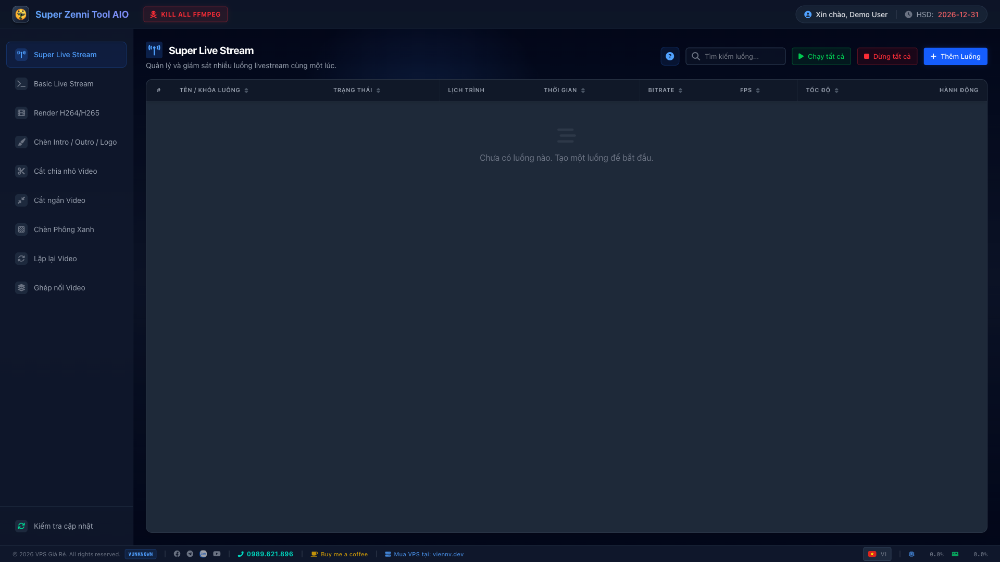
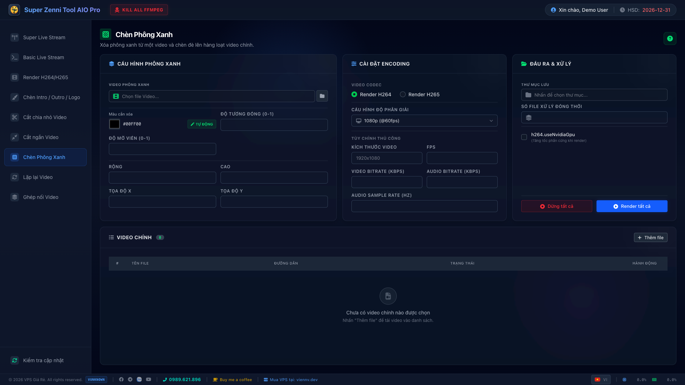
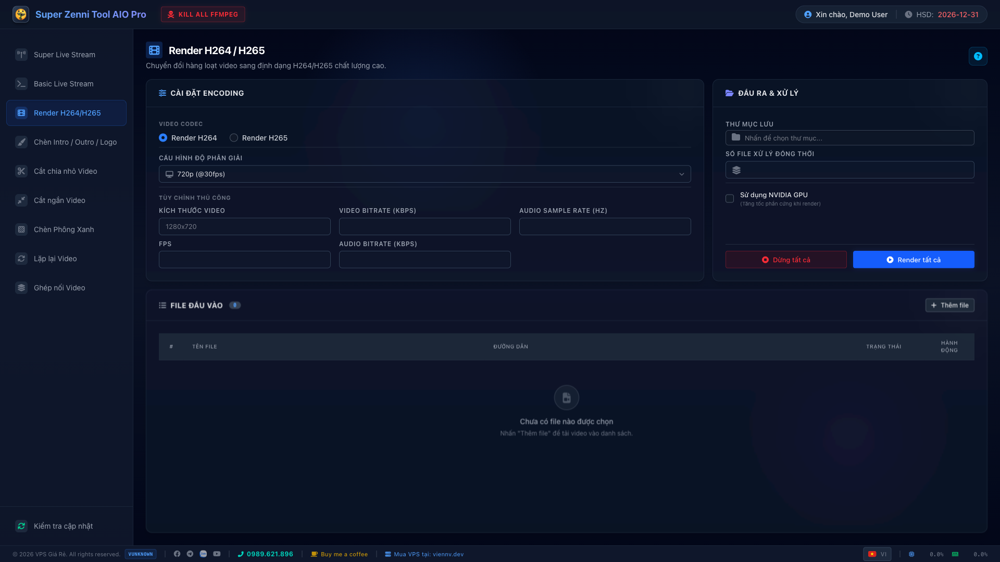
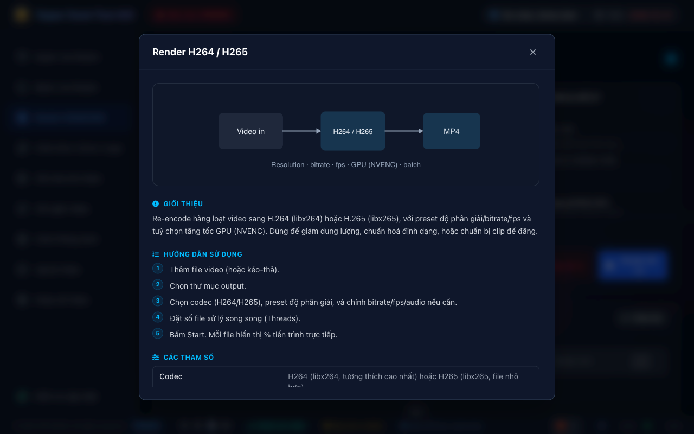

24/7 livestreaming, render, split & merge, intro/outro/logo, green screen — all in one desktop app. Auto-updating, nothing else to install.

Pick your operating system — links always point to the latest build.
On first launch the app downloads FFmpeg & yt-dlp automatically — no manual setup.
Everything a streamer / reup needs, in one app.
Stream multiple sources to RTMP (YouTube/Facebook/TikTok), live FPS/bitrate, scheduler, loop, shuffle. Bad videos auto-skipped — ideal for 24/7.
Generate a standalone script (.bat/.sh) running in its own console with timestamped logs that stays open on error. Manage & re-run easily.
Batch transcode with resolution/bitrate/fps presets. GPU acceleration (NVENC).
Split by time, trim start/end — batch processing, fast and precise.
Loop by count or duration; concat multiple clips into one, auto-normalized.
Add intro, outro and a logo watermark with live preview.
Overlay a green-screen clip onto a base video, auto color-key, loops to fit.
Every tool has a "?" with intro, steps, parameter table & diagram (EN/VI).
Notifies on new builds, downloads with progress, installs & reopens (Windows/Linux).
Clean, modern, easy to use.



Pick the file for your OS in the Download section above.
Windows: run the .exe (if SmartScreen warns → More info → Run anyway). macOS: unzip, drag to Applications, right-click → Open. Linux: extract & run.
On first launch the app downloads FFmpeg/yt-dlp. Sign in and use every tool.
No. The app downloads FFmpeg and yt-dlp into a data/ folder next to it on first run.
That's the SmartScreen warning for new apps. Click "More info" → "Run anyway".
Right-click the app → Open → Open. You only need to do this once.
The app notifies you of new builds. Windows/Linux update automatically; macOS downloads then guides a manual install. You can also click "Check for updates" in the app.
Super Zenni Tool AIO Pro is free. If it helps your work, a small coffee keeps it improving — thank you! 🙏
Donate via PayPal